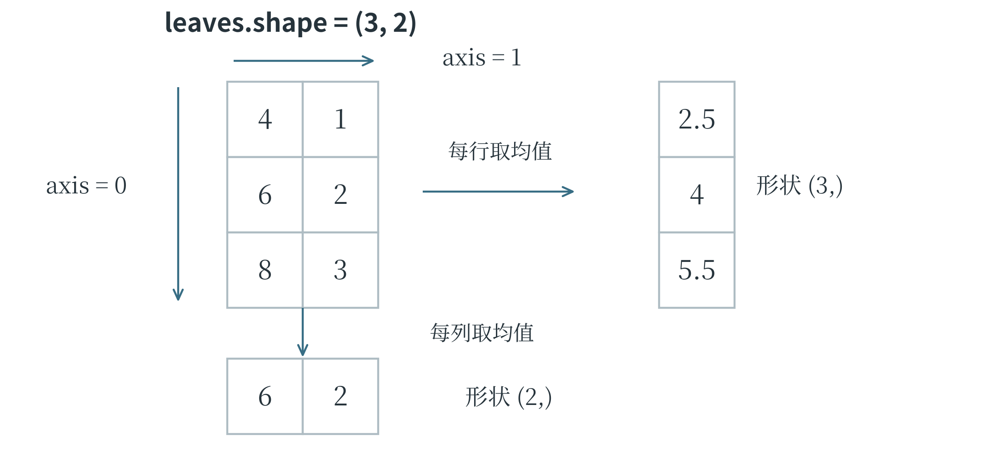
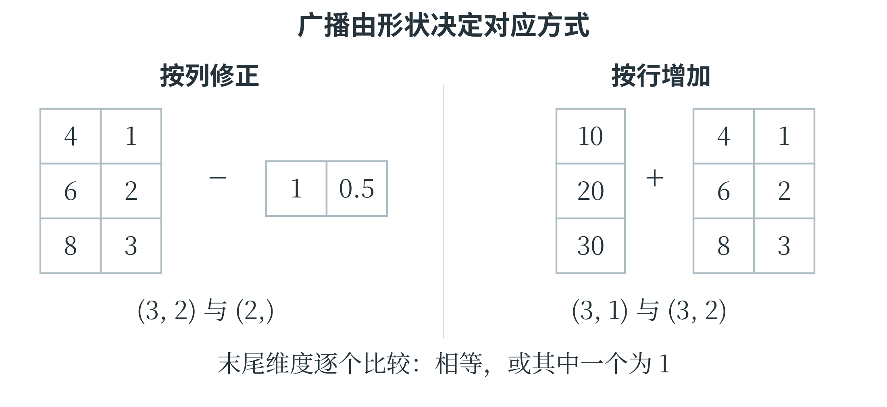

7.1 NumPy
从列表到数组
NumPy 是 Python 中用于数值计算的常用第三方库。它提供多维数组 ndarray，能够对许多同类型数值进行统一运算。与列表相比，数值数组对形状和数据类型有更明确的约定，许多计算由库内部高效执行。
使用第三方库之前，需要在当前 Python 环境中安装；安装本章所需库时，可以在终端依次执行下面两条命令。终端是接受并执行系统命令的工具，这些命令应在终端输入，不写进 Python 源文件。
python -m pip install numpy pandas matplotlib
python -m pip install scikit-learn jieba
有些环境用 python3 启动 Python，此时相应地将命令开头改为 python3。安装与运行程序应使用同一个环境。同一节的示例依次接续前面的导入和数据，初次运行时宜按顺序执行。导入时常约定将 NumPy 简写为 np。以下数组表示三片叶子的长度与宽度，每一行一个样本，每一列一种特征。
import numpy as np
leaves = np.array([[4.0, 1.0],
[6.0, 2.0],
[8.0, 3.0]])
print(leaves.shape)
print(leaves.ndim)
print(leaves.size)
三个输出依次为 (3, 2)、2、6。shape 是形状，说明有 3 行、2 列；ndim 是数组的轴数；size 是元素总数。
一个样本有两个特征，可以称为二维特征向量；将三份样本放成表格后，数组也有两个轴。这两个“二维”碰巧数字相同，含义却不同。若表格改成 3 行、10 列，每个样本有 10 维特征，数组仍然只有行、列两个轴。
数组的 dtype 表示元素的数据类型。np.array([1, 2, 3]) 通常得到整数数组，np.array([1, 2, 3], dtype=float) 则明确使用浮点数。整数数组若直接接收小数，可能丢失小数部分，因此需要小数结果时应先选择合适类型。常用的 np.zeros((2, 3)) 创建全零的 2 行 3 列数组，np.ones((2, 3)) 创建全一数组；它们适合为后续计算准备空间。
np.arange(0, 6, 2) 按步长产生 0、2、4，不包含终点 6；np.linspace(0, 1, 5) 则在两端之间等间距产生 5 个数，默认包含 0 和 1，结果为 0、0.25、0.5、0.75、1。前者主要规定步长，后者主要规定数量。用小数步长时，浮点舍入可能影响 arange 的端点表现，需要固定点数的绘图任务常用 linspace。
索引、切片与形状
NumPy 的二维索引可以在一对方括号内写“行、列”。对上面的 leaves，leaves[1, 0] 是第二行第一列，值为 6.0；leaves[:, 0] 取所有行的第一列，得到 [4., 6., 8.]；leaves[0:2, :] 取前两行和全部列。切片仍是左端包含、右端不包含，冒号单独使用表示该轴全部位置。
print(leaves[:, 0].shape)
print(leaves[:, 0:1].shape)
print(leaves[leaves[:, 0] >= 6])
前两个形状分别为 (3,) 和 (3, 1)。整数索引取出一列后减少一个轴，切片保留了列轴，形成 3 行 1 列的数组。最后一行先检查每行长度是否不小于 6，产生布尔数组 [False, True, True]，再保留条件为真的行，得到长度为 6 和 8 的两条记录。这叫布尔索引。多个数组条件通常用 &、| 组合，并把每个条件放进括号；它们与针对单个布尔值的 and、or 用法不同。变形用 reshape 改变数组的组织形状，元素总数必须保持一致。np.arange(6).reshape(2, 3) 得到两行三列，依次为 0、1、2 和 3、4、5。某一个位置可以写 -1，让 NumPy 根据总数推算，例如 reshape(3, -1) 得到三行两列。
reshape 不等于转置：转置用 .T 交换行列位置，例如两行三列变成三行两列时，原来的一行变成一列，而不是重新按原顺序分组。
NumPy 的基本切片常常是原数组的视图，与原数组共享数据。下面的小例子需要特别留意：
a = np.array([1, 2, 3])
part = a[:2]
part[0] = 9
print(a)
independent = a[:2].copy()
independent[0] = 7
print(a)
两次输出都是 [9 2 3]。第一次通过视图修改，改变了原数组；第二次先 copy，修改的是独立副本。
一次给出一组整数位置的索引，以及布尔索引，通常产生副本，不能把所有取子数组的操作一律当作视图。程序需要独立修改数据时，明确复制比依靠对切片的模糊印象更稳妥。
向量运算与按轴统计
对数组使用 +、-、*、/、**，通常进行逐元素计算。np.array([1, 2]) * 2 得到 [2, 4]，而 Python 列表 [1, 2] * 2 得到 [1, 2, 1, 2]。相同符号遇到不同对象，含义可能不同。两个数组使用 * 是对应元素相乘，矩阵乘法则用 @。
A = np.array([[2, 1, 3], [0, 4, 1]])
w = np.array([1, 2, 1])
print(A * w)
print(A @ w)
第一项输出两行三列，分别为 [2, 2, 3] 和 [0, 8, 1]；第二项输出 [7, 9]，正是第三章中每行与向量做点积的结果。第一项中，形状 (3,) 的 w 对每一行重复应用，称为广播。一般的广播规则从形状末端对齐，各对应轴长度相等或其中之一为 1 时可以配合；不能配合就会报错。广播并不意味着库会猜测哪一行应该配哪一列。
除了形状，统计运算还要指定沿哪个轴汇总。leaves.mean() 对全部 6 个元素求平均；leaves.mean(axis=0) 将行方向汇总掉，保留每列结果，得到 [6., 2.]；leaves.mean(axis=1) 将列方向汇总掉，保留每行结果，得到 [2.5, 4., 5.5]。
按列求均值，分别得到平均长度与平均宽度；按行求均值，则把同一叶片的长度和宽度混在一起。后者是否有意义，要看任务需要。

sum、min、max、std 等方法也可以接受轴参数。NumPy 的 std 默认用元素个数作方差分母，和第三章整组数据的标准差定义一致；一些其他统计工具默认使用样本数减一，比较数值时应核对约定。利用按列均值和标准差，可以进行第五章的标准化，但这些统计量仍应从训练部分计算。
true_values = np.array([10.0, 10.0, 10.0])
predictions = np.array([8.0, 11.0, 12.0])
errors = predictions - true_values
mae = np.mean(np.abs(errors))
mse = np.mean(errors ** 2)
print(round(mae, 4), round(mse, 4))
输出为 1.6667 3.0。一次数组减法已经完成三条记录的误差计算，abs 和平方再分别作用于每个位置，最后求平均。这样的代码与手算步骤一一对应，减少了显式循环，却没有改变指标定义。
把形状变化画在纸上
数组运算中，形状是一条很有用的线索。还是看三片叶子的测量值：三行分别属于三个样本，两列依次是叶长和叶宽。如果两种测量工具的零点分别偏高 1 厘米和 0.5 厘米，需要从每行的两列中减去这两个数。长度为 2 的数组正好与每行的两项对应。
offsets = np.array([1.0, 0.5])
corrected = leaves - offsets
print(corrected)
结果为 [[3.0, 0.5], [5.0, 1.5], [7.0, 2.5]]。计算时，offsets 的两项分别作用于两列，每一行沿用同一组修正数。这正是广播：程序不必先写出三份相同的修正数组，也能表达对应的运算。这里给定的修正数来自假设的仪器零点偏差，与从样本数据中学习标准化参数是两回事。假如另一个任务要求第一行加 10、第二行加 20、第三行加 30，且每行的两项都加上该行的数，修正数组就应写成三行一列。图 7-2 中，两种形状决定了两种不同的对应方式。
row_offsets = np.array([[10.0], [20.0], [30.0]])
print(leaves + row_offsets)
结果为 [[14.0, 11.0], [26.0, 22.0], [38.0, 33.0]]。若误写成形状 (3,) 的 [10, 20, 30]，末尾维度 3 与原数组的末尾维度 2 既不相等，也都不是 1，便不能这样相加。
数组里“恰好有三个数”，并不意味着程序知道这三个数各属于哪一行；对应关系必须由形状表达清楚。

reshape 与转置也容易混淆。把按行排列的数 1、2、3、4、5、6 放成三行两列，再分别执行两种操作，可以直接看出差别。
numbers = np.arange(1, 7).reshape(3, 2)
print(numbers.reshape(2, 3))
print(numbers.T)
前一个结果是 [[1, 2, 3], [4, 5, 6]]，按默认的行顺序重新安排形状；后一个结果是 [[1, 3, 5], [2, 4, 6]]，把原来的列变成行。结果虽然都是两行三列，每个位置的内容却不一样。处理“每行一个样本”的数据时，随意重排可能把不同样本的特征拼到一起。数组尺寸符合接口，只说明程序有机会运行，还要检查每行、每列的实际含义。